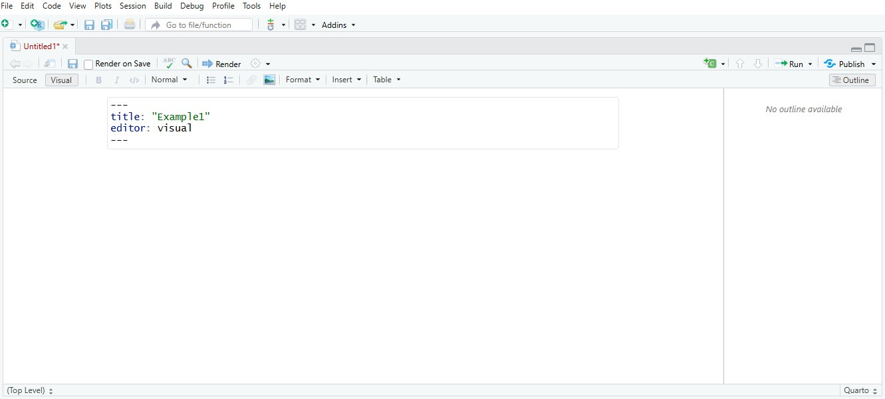
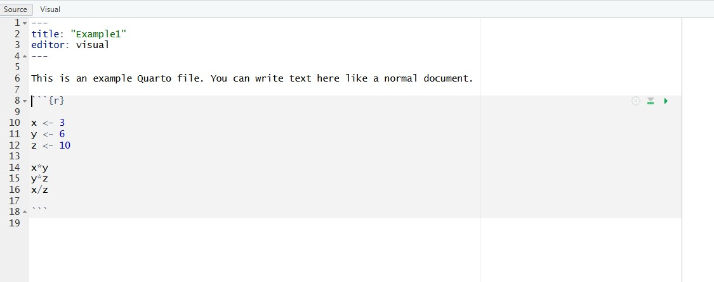

x <- 3
y <- 6
z <- 10
x*y
y*z
x/z9 Using Quarto
9.1 What is Quarto?
Quatro is how we will work with R and RStudio to produce documents, assignments, and exams.
One way to think about Quarto is that it is like Microsoft Word, however, it is much more powerful and flexible.
In fact, the entire ECON 700 course is built with R, RStudio, and Quarto.
As with R and RStudio, the more you work with Quarto, the easier it comes to work with Quarto.
9.2 Getting Started
To get started with Quarto, you have to install Quarto.
This step assumes you have already installed R and RStudio.
To install Quarto, go to https://quarto.org/docs/get-started/
Once you have installed Quarto, go to the getting started in RStudio page.
You can find this page at: https://quarto.org/docs/get-started/hello/rstudio.html
The getting started page will help you understand the capabilities of Quarto.
9.3 Creating a File
In RStudio, go to File -> New File -> New Quatro Document.
You will see the window below. Let’s say we name our document: Example-1.

Once you have created this file, you will see the following window in RStudio:

9.4 Code Chunks
R code chunks can be identified with {r}.
To start a code chunk, you use ```{r} and you close off the code chunk with ```.
You can run the code chunk interactively in RStudio, that is, you can click on the green arrow icon at the top of the code chunk and RStudio will display the results.
9.5 Working with Quartro
We want to create a text description of in our new Quarto document. We also want to create a simple code chunk in our Quarto document that will execute when we render our file.
In your new file, let’s write the following text:
This is an example Quarto file. You can write text here like a normal document.
And let’s include the following code chunk:
Your file should look like the following picture:

9.6 Rendering
Use the Render button in RStudio to render the file and previous the output. If you prefer to automatically render whenever you save, check the Render on Save button in RStudio.
When you render, your can save your file as Example1.qmd and the rendered file should appear in a browser window.
Quarto is a powerful approach to displaying your work in R and RStudio.
9.7 Additional Resources
Getting started with Quarto video from Posit: https://youtu.be/_f3latmOhew?si=FS-Ue1--z-hLGtKg
Quarto crash course: https://www.youtube.com/watch?v=oYV1a9sWhgM
R for Data Science: Quarto https://r4ds.hadley.nz/quarto.html
Introduction to Quarto, Klajdi Puka: https://kpuka.ca/resources/quarto_intro.html